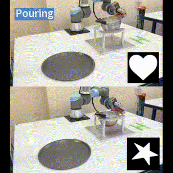
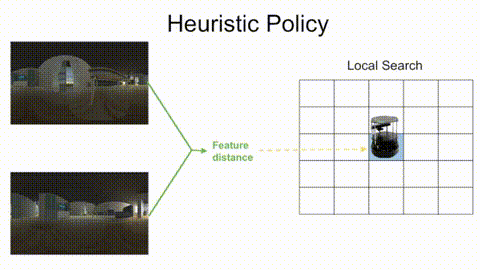

Hung-Jui (Joe) Huang
I am a 5th-year Ph.D. student at CMU RI, co-advised by Prof. Michael Kaess and Prof. Wenzhen Yuan. My research focuses on superhuman tactile sensing and tactile-driven dexterous manipulation. On the tactile sensing side, I use touch to estimate physical properties, track object pose during contact, and create high-resolution 3D reconstructions.
I recently completed two research internships at Google DeepMind, working on multi-modal sensing for vision-language-action (VLA) models and real-world reinforcement learning, applied to dexterous and bimanual manipulation, where robots coordinate two hands for contact-rich tasks.
Before CMU, I received my B.Sc. in EECS from MIT and spent two years at ISEE working on self-driving trucks. I am a Presidential Fellow at CMU.
I am a 5th-year Ph.D. student at CMU RI, co-advised by Prof. Michael Kaess and Prof. Wenzhen Yuan. I am generally interested in robotics, computer vision, and machine learning. My research is about superhuman tactile sensing, including actively estimating physical properties, tracking object pose during contact, and creating high-resolution 3D reconstructions, as well as tactile-driven dexterous manipulation. I recently completed two research internships at Google DeepMind in London, working on multi-modal sensing for vision-language-action (VLA) models and real-world reinforcement learning. The work centered on bimanual manipulation, in which a two-armed robot or a humanoid with dexterous hands coordinates both arms to perform contact-rich tasks.
I received my B.Sc. in EECS at MIT. During my undergrad, I worked with Prof. Gregory Stein and Prof. Nicholas Roy. After B.Sc., I worked at ISEE for two years with Dr. Chris Baker and Prof. Ying Nian Wu. In the past, I have worked on robot navigation and self-driving trucks.
I am named a Presidential Fellow at CMU and my research is supported by the Paul and James Wang/Sercomm Presidential Scholarship.

Experience
 DeepMind
DeepMindStudent Researcher ×2
Jul. 25 – Jan. 26
Mar. 26 – Aug. 26
 CMU
CMUPh.D. in Robotics
Aug. 21 – Present
 ISEE
ISEEResearch Engineer
Aug. 19 – May 21
 NVIDIA
NVIDIAIntern
Jun. 18 – Aug. 18
 MIT
MITB.Sc. in EECS
Sep. 14 – Jun. 19
Publications
Extremely high-fidelity, real-time 3D reconstruction using only tactile input, robust across tens of thousands of frames and hundreds of contact breaks.
Reconstructing 3D objects with fine geometric details from sparse robot touches, guided by diffusion priors.
Our tactile sensor is designed for efficient, continuous scanning over large surfaces.
Real-time, robust, and accurate tactile-based tracking for novel objects, including low-textured ones like ping pong balls and eggs. Useful for manipulation, in-hand manipulation, and 3D reconstruction tasks.
Robot reconstructing visually and geometrically accurate surroundings with sparse visual and tactile data.

Our pancake preparation robot integrates advanced sensory and control algorithms to mix batter with precise uniformity, estimate its properties, and pour it into specified shapes.
Our sauce plating robot can precisely control the thickness of squeezed liquids on a surface, even when dealing with unseen liquids.

Estimating solid particle properties (e.g., size and shape) inside a container using tactile and force-torque sensing.
High-precision liquid viscosity and volume estimation using only tactile sensing. Our approach can even estimate sugar concentration within water based on slight viscosity variations.
A planning algorithm with guaranteed bounds on the probability of safety violation, which nonetheless achieves non-conservative performance. Tested on a self-driving truck in a real-world environment.

O-CNN compares omnidirectional visual images to a database of images to determine the robot's location and helps navigation.
Teaching
I served as a teaching assistant for the following courses.
CMU 16-720 Computer Vision (Spring 2024)
MIT 6.141 Robotics: Science and Systems (Fall 2018)
Miscellanea
My chinese name is 黃泓睿 and it pronounced like "Huang-Hung-Ray". 😀
Outside of research, I read philosophy, meditate, and play video games.